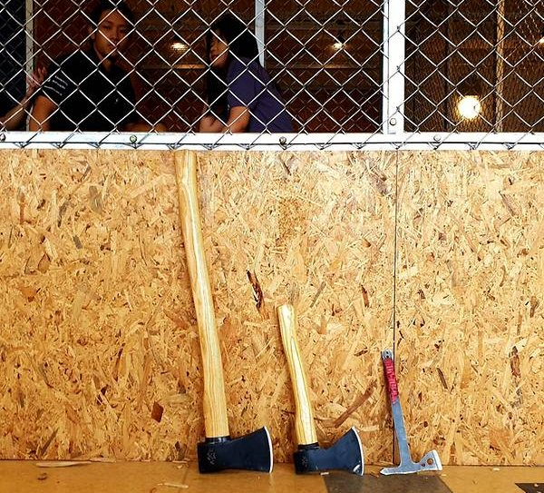
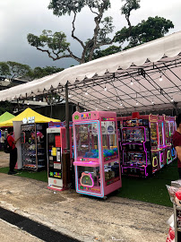
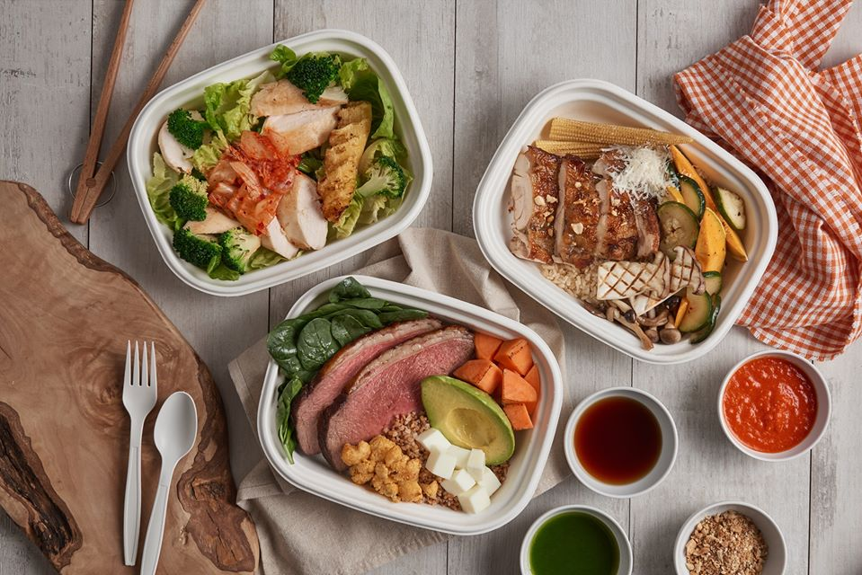
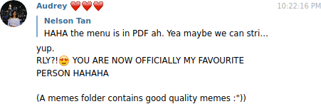
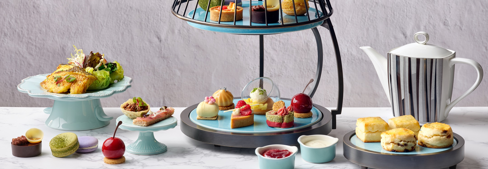
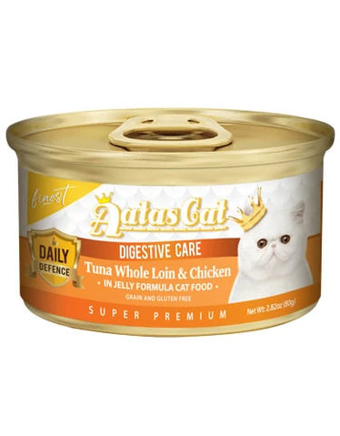
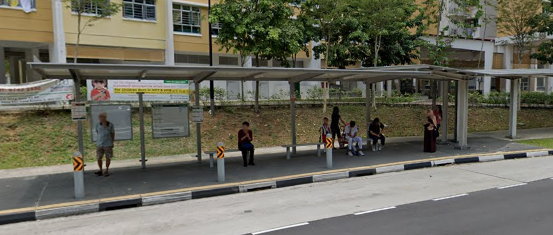

Auson == Love
-
-
Our first date
It was so nerve-racking for me to plan that date, and while it was nothing as compared to your well thought out date ideas and plans, I hope you liked it. Pro tip: It is never a good idea to go for axe throwing on your first date. You can't really converse with the potential love of your life (who is now the love of my life), and in all honesty it wasn't really that fun. Next time maybe you can consider the zoo as she hinted 🙈 (well there is not gonna be a next time for any of us anyways eh) I was a lucky guy to chance upon the Thai style pasar malam thingy, and probably made one of the best decisions in my life when I decided to put aside my bias for claw machines and put that note into the machine. It never dawned on me till much later that the experience mattered so to you and I am glad that you found me as someone you could trust. Dinner was fine, it was nothing to write home about as compared to all the other places you've brought me to. The subsequent dessert bar was mind blowing though, and I am glad that you enjoyed the experience. I did very much enjoy our date. It was when we were playing the claw machine and you grabbing me by the arms that I started falling in love with you. While I may have looked sheepish when you did that, I definitely appreciated your receptiveness to me. It was inappropriate for me say say "I love you" then, but now that we are on the same page, I would like to do exactly that. I love you my dear Audrey! (Low key regretting that I did not take any photos to upload here. So you are just stuck with this GIF [pronounced "gift"] of my silly smile hehe)

-
-
Groceries time!
When you said you were going for a grocery run at Buona Vista, my first instinct was to ask if I could follow along. I was afraid that you would say no, so thank you for accepting my gesture! I love it when you appreciate my love! I really loved it when you shared so much about your interests with me. I love that glow in your eyes whenever you share something interesting with me. While we did have issues choosing where to go for dinner, in the end you made a great choice again and we got to enjoy something we were both familiar with! Sorry for being so bad at making decisions, I will do better okie :)
And yes I am looking forward to the cooking class date we gonna have together in the future!
-
The Tai Tai life
Thank you for calling me your favorite person :) You are my favorite person too and I will love you forever <3
This was the day I tried out the best fish in my life, and it was all thanks to my darling for giving me the courage to take that leap of faith. Yes, there were many things on the table that I was really apprehensive of trying, and you gave me that additional push and I've regretted nothing. The quick "dinner" we had outside the MRT station before we went home was weirdly romantic, and at Bukit Panjang, I was low key happy that the bus was going to take 20+ minutes to arrive. I treasure every moment I spend with my love and I am glad that I could spend more time with you that night. And yes, thank you for staying up late to filter out the choices to a few that I would like. That was really a lot of effort and I appreciate it. Love you to the moon and back and some more :) -
Udon know how much I love you 💕
This was such a spontaneous date and hehe spontaneous Nelson loves it! Zooming on the MRT was definitely something new and fun! This was the day I regretted not locking my fingers with yours as I held your hand while we were walking in Takashimaya. That memory of us makes me long for you so much more and I can't wait for the day where I can hold your hand :) And once again, you planned for the whole date and brought me to try so many awesome things! That was a truly Japanese themed day, with the Udon, Matcha, then Unagi. The best part was the walk home from Bukit Panjang, and I thoroughly enjoyed that late night talk + the physical closeness we had to each other. I really long for that warmth again and how I wish that that that night didn't end. I love you and I miss you :')
 -
- 11th March 2020
- 20th March 2020
- 25th March 2020
- 27th March 2020
- 1st April 2020
- 2nd April 2020
- 26th April 2020